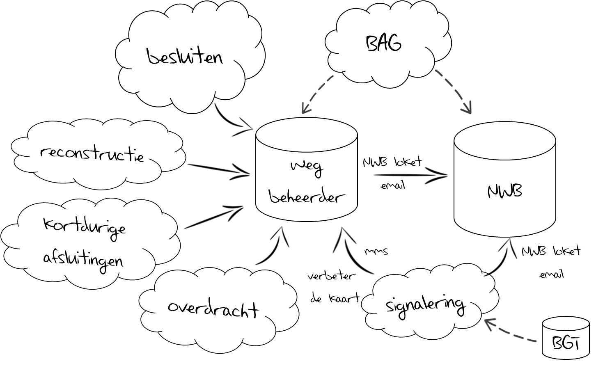
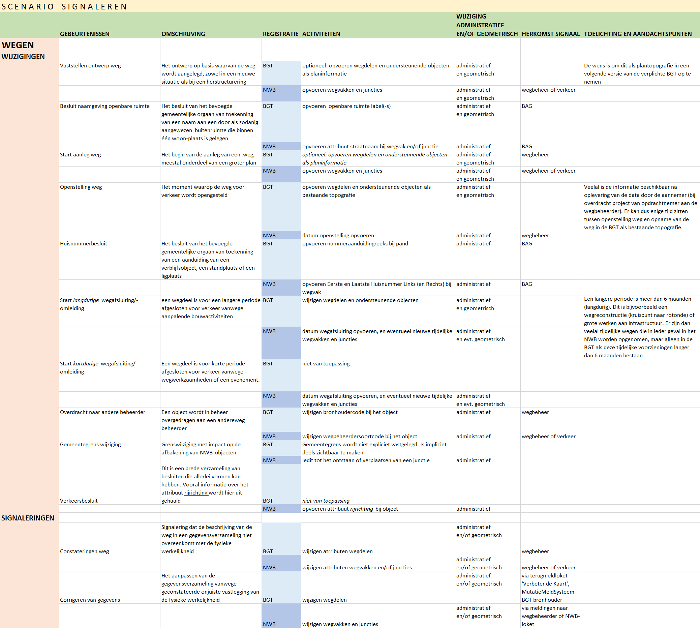
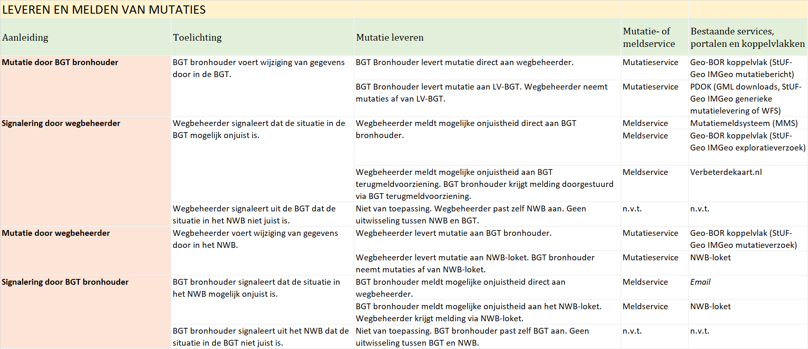
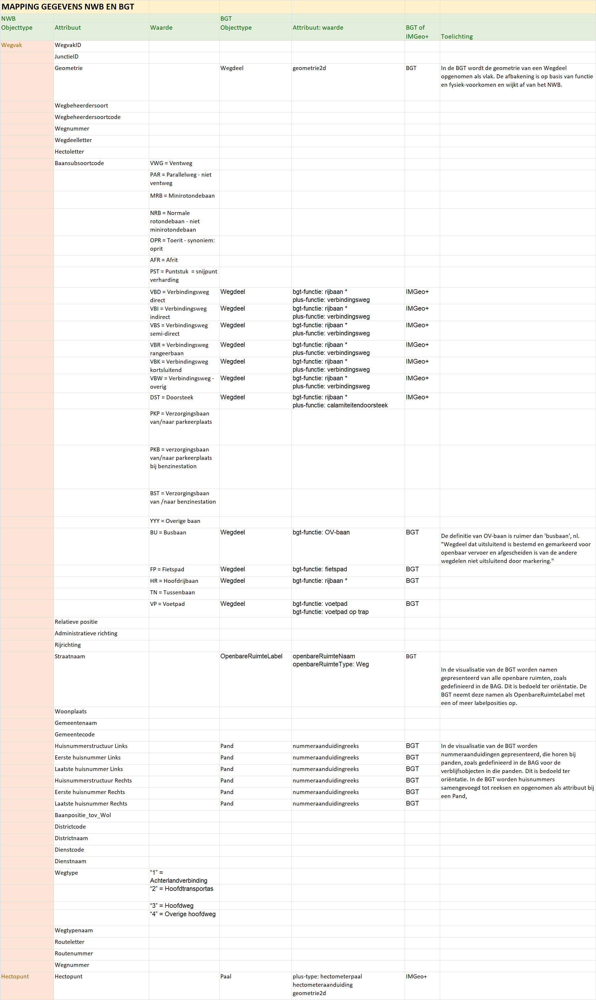

Samenhang in bijhouding NWB en BGT
Geonovum Handreiking

Naamsvermelding-GeenAfgeleideWerken 3.0 Nederland
(CC BY-ND 3.0)
Naamsvermelding-GeenAfgeleideWerken 3.0 Nederland
(CC BY-ND 3.0)
Deze handreiking is een hulpmiddel voor gemeenten, provincies, waterschappen en Rijkswaterstaat om de werkprocessen rondom de bijhouding van het Nationaal Wegenbestand (NWB) en de Basisregistratie Grootschalige Topografie (BGT) verder te optimaliseren. Middels een checklist van activiteiten wordt inzichtelijk gemaakt hoe gebeurtenissen van invloed kunnen zijn op zowel NWB als BGT, en hoe deze signalen bij beide partijen kunnen aankomen.
Dit is een document zonder officiële status. Voor vragen of opmerkingen over de inhoud van dit document kunt u contact opnemen met Geonovum.
Het Programma Samenwerking Nationaal Wegen Bestand heeft aan Geonovum opdracht gegeven om een oplossing te ontwerpen waarmee voor de korte termijn de samenhang in de bijhouding tussen NWB en BGT kan worden verbeterd. Dat uit zich in het verbeteren van de datakwaliteit van het NWB doordat het NWB beter gebruik maakt van de BGT en de totale populatie van wegbeheerders van betrokken overheidslagen (gemeenten, provincies, waterschappen en Rijkwaterstaat zelf) de gegevens in een uniforme vorm aanbiedt aan het NWB.
Ons beeld is dat NWB en de BGT veelal binnen een organisatie door verschillende personen en afdelingen wordt bijgehouden. Een gevolg hiervan is dat het NWB en BGT niet altijd op elkaar afgestemd zijn. Het is belangrijk dat het NWB en BGT actueel en consistent met elkaar zijn. Beide spelen een belangrijke rol in de geo-informatie infrastructuur van Nederland.
Dit document is bedoeld om gemeenten, provincies, waterschappen en Rijkswaterstaat te helpen bij het verder optimaliseren van de activiteiten en processen rondom de bijhouding van het NWB en BGT. We beschrijven het huidige proces en betrokkenen rond de bijhouding van Nationaal Wegenbestand (NWB) en de Basisregistratie Grootschalige Topografie (BGT). We stellen een checklist met gebeurtenissen en activiteiten die leiden tot wijzigingen in NWB en/of BGT ter beschikking waarmee organisaties hun eigen werkprocessen kunnen analyseren en indien nodig verbeteren. Tenslotte schetsen we de mogelijkheden om elkaar aan beide kanten op de hoogte houden door het sturen of oppikken van signalen en het uitwisselen van relevante gegevens.
Dit document richt zich op de samenhang in bijhouding van gegevens met betrekking tot wegen in het NWB en de BGT. Spoorwegen en vaarwegen worden buiten beschouwing gelaten.
Dit document richt zich op het zo goed mogelijk aan elkaar doorgeven van signalen van wijzigingen in de registraties en het aangeven van signaleringen als in de andere registratie een onvolledige of onjuiste weergave van de werkelijkheid wordt geconstateerd.
De term wegbeheerder wordt gebruikt voor de instantie of rechtspersoon die een (deel van de) weg beheert en hierover gegevens bijhoudt en aanlevert aan het NWB. Het NWB kent de volgende wegbeheerders: gemeenten, provincies, waterschappen, en Rijkswaterstaat.
De term bronhouder wordt gebruikt voor de instantie of rechtspersoon, die gegevens over topografische objecten bijhoudt en aanlevert in het kader van de BGT. De BGT kent de volgende bronhouders: gemeenten, provincies, waterschappen, Rijkswaterstaat, Prorail, Defensie en Rijksdienst voor Ondernemend Nederland.
Bij gemeenten, provincies, waterschappen en Rijkswaterstaat houdt men dus zowel gegevens bij in het kader van het NWB als de BGT. Binnen deze organisaties kan het proces van bijhouding als volgt zijn georganiseerd:
Bijhouding vindt in gescheiden processen bij andere organisaties of afdelingen plaats, waarbij (veelal) bij de vastlegging van de hartlijnen niet de BGT wordt gebruikt als basis. Bijvoorbeeld separaat wordt bijgehouden bij de afdeling BGT en de afdeling Verkeer.
Bijhouding ten behoeve van het NWB vindt niet plaats.
De mate waarin een organisatie haar processen kan inrichten en optimaliseren, hangt nauw samen met de mate van invloed die zij op die processen kan uitoefenen. Een organisatie die het werk zelf uitvoert, kan invloed uitoefenen op alle aspecten van deze uitvoering. Een organisatie die taken uitbesteedt, bijvoorbeeld aan een verkeerskundig adviesbureau of ingenieursbureau, kan veelal alleen invloed uitoefenen op de input en de output van de werkzaamheden, niet op de uitvoering zelf. Dit is van invloed op de mate waarin processen daadwerkelijk kunnen worden geoptimaliseerd.
Ook als de werkzaamheden ‘in huis’ worden uitgevoerd, is er sprake van variatie bij de inrichting van de betreffende processen. Deze kunnen bij één afdeling zijn belegd, of verdeeld zijn over meerdere organisatieonderdelen. Dit heeft invloed op de mate van optimalisatie die kan worden bereikt. Sommige organisaties zijn dermate groot, dat het verdelen van werkzaamheden over meerdere afdelingen hetzelfde effect kan hebben als het uitbesteden aan een derde partij.
Het aanleveren van gegevens voor het NWB kent geen wettelijke verplichting: wegbeheerders leveren op vrijwillige basis in een niet-gestandaardiseerd formaat de weggegevens aan het NWB-loket. In de praktijk komt dit er op neer dat ongeveer 2/3 van de gemeentelijke wegbeheerders gegevens niet levert voor het NWB; wegbeheerders van provincies en Rijkswaterstaat leveren de gegevens wel aan.
Het aanleveren van gegevens voor de BGT is een wettelijke verplichting: bronhouders dienen volgens de gestelde eisen voor kwaliteit, actualiteit en uitwisseling in de BGT|IMGeo standaarden de gegevens aan te leveren aan de Landelijke Voorziening BGT.
Het verwerken van gegevens in het NWB gaat als volgt:
Verwerking van leveringen van een deel van de wegbeheerders. De gegevens uit de bron worden integraal overgenomen. De gegevens worden in verschillende formaten aangeleverd.
Van het overig areaal worden door het NWB-loket zelf signalen verzameld vanuit diverse bronnen (google, BRT, politie) in verschillende formaten en verwerkt in het NWB.
Het verwerken van gegevens van bronhouders in de Landelijke Voorziening BGT gaat via een geautomatiseerd proces waarbij gegevens na controle worden overgenomen in de centrale registraties en beschikbaar gesteld aan afnemers via PDOK.
Verschillende gebruikers van het NWB hebben een andere informatiebehoefte. Voor o.a. modellen en berekeningen is de situatie die structureel en blijvend is, en waar een weg oorspronkelijk voor is ontworpen van belang. Voor onder meer verkeersmanagement is ook de korte termijn situatie van belang, waarbij snel inzicht in de nieuwe / gewijzigde situatie gewenst is.
De actualiteit van het NWB is maandelijks. Om die reden dient 6 tot 8 weken voor openstelling van de weg de gegevens te worden aangeleverd aan het NWB-loket. Deze actualiteit is vooral van belang voor verkeersmanagement en hulpdiensten.
De actualiteit van de BGT is gebaseerd op de gerealiseerde situatie, waarvan de gegevens binnen 6 maanden verwerkt dienen te zijn in de registratie.
Tijdelijke wegen - als ze korter dan 6 maanden bestaan- komen niet in de BGT, maar deze zijn wel nodig voor het NWB - als ze langer dan 6 weken bestaan.
In deze handreiking onderscheiden we gebeurtenissen en activiteiten.
Gebeurtenissen maken deel uit van een groter geheel, een proces. Een proces bestaat uit een aaneenschakeling van stappen waarbij handelingen worden uitgevoerd die bijdragen tot het realiseren van een bepaald eindresultaat. Bijvoorbeeld het proces 'aanleg nieuwe weg' leidt tot het eindresultaat van een nieuwe weg in de openbare ruimte. Voorbeelden van gebeurtenissen zijn : 'vaststellen ontwerp weg' en 'openstellen weg'.
Om de gebeurtenissen te ordenen onderscheiden we de procedures Wijzigingen en Signaleringen. De procedure Wijzigingen omvat alle gebeurtenissen en activiteiten naar aanleiding van een fysieke (in terrein zichtbaar) of bestuurlijke (nemen van een besluit) verandering aan een weg. De procedure Signaleringen omvat alle gebeurtenissen en activiteiten naar aanleiding van de constatering van (een verandering) aan een weg.
Een fysieke of bestuurlijke wijziging of correctie leidt tot een mutatie in de BGT en/of NWB (objectief). Een signalering van mogelijke onjuistheid van gegevens in BGT en/of NWB leidt tot een melding (subjectief).
Voor NWB en BGT worden de volgende categorieën gebeurtenissen onderkend: besluiten, reconstructies (aanleg en langdurige afsluitingen), kortdurige afsluitingen, overdracht beheer en signalering. Voorts leiden gebeurtenissen in de BAG tot activiteiten in de bijhouding van NWB en BGT. Onderstaande schets illustreert de gebeurtenissen en triggers voor de wegbeheerder in relatie tot het NWB en de BGT.

Een gebeurtenis is aanleiding (trigger) tot activiteiten om de registraties van NWB en/of BGT bij te werken. De activiteit na gebeurtenis 'vaststellen ontwerp weg' is bijvoorbeeld het opvoeren van planinformatie van de nieuwe weg in de BGT, de activiteit die hoort bij gebeurtenis 'openstellen weg' is het aanleveren van gegevens over de nieuwe weg 6 weken voor de openstelling aan het NWB, en het wijzigen van de planinformatie van de nieuwe weg in bestaande topografie. Deze activiteiten kunnen in een volgende stap vervolgens worden geclusterd tot processen.
Nu we de lijst met gebeurtenissen compleet hebben, kunnen we aan de slag met de activiteiten die moeten worden uitgevoerd als gevolg van elk van deze gebeurtenissen. Daartoe hebben we een checklist opgesteld, waarvan hieronder een verkleinde weergave. De checklist is als een losse bijlage beschikbaar. Per gebeurtenis beschrijven we wát er in elk van de registraties moet gebeuren, en wat de herkomst is van het signaal dat de start vormt voor de activiteit. Iedere regel in de checklist vormt de basis voor een of meerdere activiteiten die moeten worden beschreven en uitgevoerd. De overzichtstabel is als een losse bijlage beschikbaar.
Checklist activiteiten

De laatste - en meest belangrijke stap - is het vertalen van deze activiteiten naar processtappen en tenslotte naar complete processen. Deze stap laten we graag aan de organisatie zelf. We zijn echter zeer geïnteresseerd in uw eigen uitwerking hiervan.
Fysieke of administratieve veranderingen aan wegen of besluiten die dat ondersteunen leiden veelal tot het wijzigen van gegevens van wegen in NWB en/of BGT. Als NWB en BGT niet in één proces worden bijgehouden - d.w.z. wegbeheerder en BGT bronhouder voeren elk apart de wijzigingen in de eigen registratie door – is het van belang om elkaar te informeren door mutaties in de eigen registraties aan de andere partij te leveren en door bij het signaleren van mogelijke onjuistheden in de andere registratie dit aan de andere partij te melden.
We onderscheiden drie situaties als aanleiding voor het leveren of melden van mutaties.
Voor het leveren van mutaties en het melden van verschillen onderscheiden we mutatieservices en meldservices. Een mutatie in de eigen partij wordt via een mutatieservice geleverd aan de andere partij. Een signalering van een mogelijke onjuistheid bij de andere partij wordt gemeld via een meldservice.
Er zijn diverse bestaande mutatie- en meldservices als portalen en berichtenverkeer, waar wegbeheerder en bronhouder op kunnen aansluiten.
Bent wegbeheerder dan kunt u gegevens afnemen van de BGT via de mutatieservices:
en kunt u mogelijke onjuistheden melden aan de BGT via de meldservices:
Bent bronhouder dan kunt u gegevens afnemen van de NWB via de mutatieservices:
Bent bronhouder dan kunt u mogelijke onjuistheden melden aan het NWB via de meldservice:
De lijst met aanleidingen voor het leveren van mutaties en melden van mogelijke onjuistheden, en de beschikbare mutatie- en meldservices hebben we samengevat in overzichtstabel, waarvan hieronder een verkleinde weergave. De overzichtstabel is als een losse bijlage beschikbaar.

Niet elke wijziging van gegevens in de registratie van NWB of BGT is van belang voor de andere partij. Bijvoorbeeld het wijzigen van een wegbeheerdercode in het NWB heeft geen vloed op de gegevens van een wegdeel in de BGT, en het wijzigen van het type verharding van een wegdeel in de BGT is niet van belang voor het wegvak in het NWB. Daarom hebben we een overzichtstabel opgesteld met welke gegevens in NWB en BGT een relatie hebben met elkaar en dus relevante mutaties opleveren (ofwel een mapping van NWB en BGT gegevens). Hieronder staat een verkleinde weergave van deze overzichtstabel. De overzichtstabel is als een losse bijlage beschikbaar.

Opdrachtgever
Eric van der Ster (Rijkswaterstaat)
Dirk Simon Beerda (Rijkswaterstaat)
Auteurs
Dick Krijtenburg (Geonovum)
Arnoud de Boer (Geonovum)
Kerngroep
Bram Schiltmans (Rijkswaterstaat)
Linda Bannink (provincie Noord-Holland)
Stefan van Gerwen (provincie Noord-Brabant)
Klankbordsessie 25 januari 2018
Adrie de Jong (Bedrijfsvoeringsorganisatie West-Betuwe)
Bob Rijsman (gemeente Hellendoorn)
Dyonne de Mari (Transfer Solutions)
Erik van Ooijen (provincie Zuid-Holland)
Henk Bosma (gemeente Lelystad)
Jan Dorrestijn (gemeente Amersfoort)
Jan Hilhorst (Meerinzicht)
Joop Voortman (gemeente Rijssen-Holten)
Jo Duijkers (Rijkswaterstaat)
Leon Baanders (Bureau Kragten)
Lucas Broekema (Bureau Kragten)
Patrick Meeuwisse (ARCADIS)
Remco in ’t Hout (Rijkswaterstaat)
Remco Mennegat (gemeente Hellendoorn)
Richard Witmer (Kadaster)
Rob van der Schoot (Rijkswaterstaat)
Klankbordsessie 8 februari 2018
Adrie de Jong (Bedrijfsvoeringsorganisatie West-Betuwe)
Bart van der Lely (Sweco)
Bas Bussink (gemeente Amsterdam)
Dick Kremer (Kadaster)
Dyonne de Mari (Transfer Solutions)
Erik van Ooijen (provincie Zuid-Holland)
Jan Dorrestijn (gemeente Amersfoort)
Jo Duijkers (Rijkswaterstaat)
Leon Baanders (Bureau Kragten)
Lucas Broekema (Bureau Kragten)
Martin Kraan (Kadaster)
Patrick Meeuwisse (ARCADIS)
Richard Witmer (Kadaster)
Rob van der Schoot (Rijkswaterstaat)